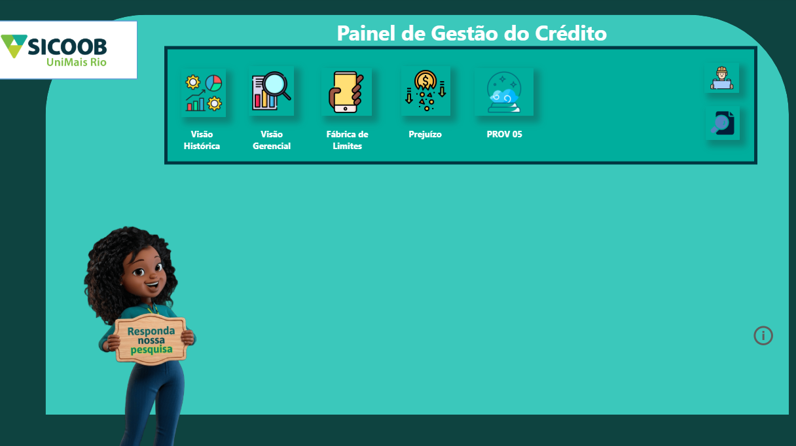
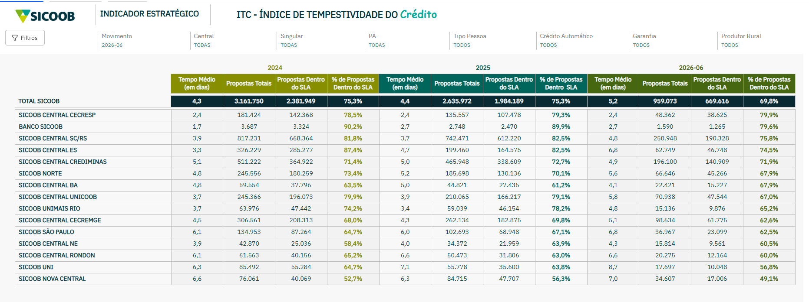
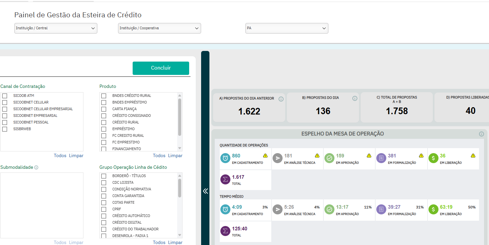
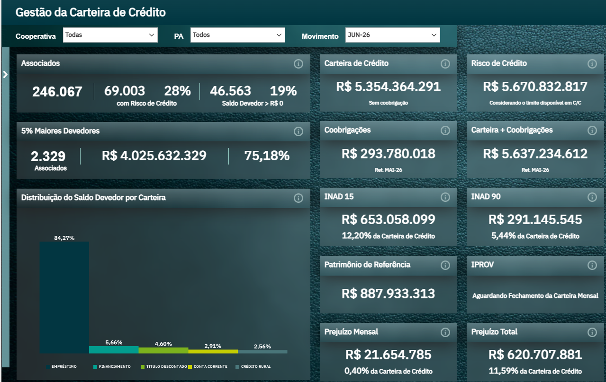
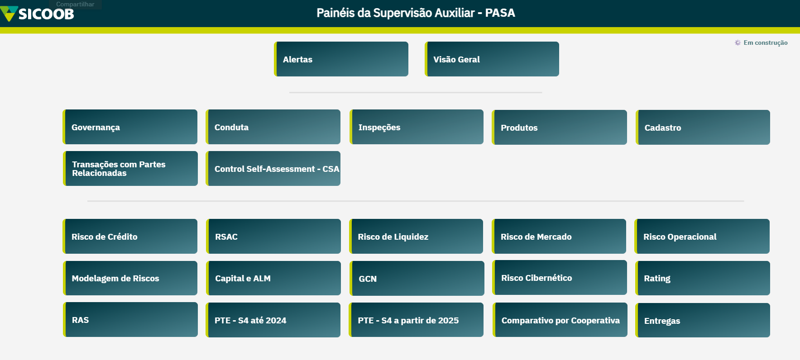

O Painel de Gestão do Crédito oferece uma visão analítica e estratégica da nossa carteira, estruturado nos seguintes pilares:
- Visão Geral e Evolução: Série histórica da carteira, variações mensais de provisão, indicadores de entrada de BNDU e acompanhamento da carteira de prejuízo.
- Risco e Inadimplência: Análise das safras de entrada com maior índice de inadimplência, volume de atrasos por alçadas de crédito e classificação da carteira por estágios de risco.
- Rentabilidade e Precificação: Comparativo das taxas de juros praticadas em relação ao sistema regional, taxa DI e custos de captação (origem), além do prazo médio de pagamento das operações.
- Concentração e Segmentação: Distribuição do saldo devedor e da inadimplência detalhada por PA, modalidade e gerente. Inclui visões de concentração geográfica (mapa), exposição por CNAE e acompanhamento específico da carteira de cooperados PJ.
- Garantias e Limites: Volume da carteira com enquadramento de garantias e acompanhamento da Fábrica de Limites (série histórica e rentabilidade por perfil de segmentação).
- Simulações: Módulo PROV 05 com simulações dinâmicas de fechamento.

Indicador estratégico que mede o percentual de propostas concluídas dentro do SLA pactuado nacionalmente, considerando a quantidade de propostas, e não o valor financeiramente envolvido.
ACESSAR PAINEL
Monitoramento da Esteira de Crédito (atualização a cada 1 hora):
- Rastreamento do status das propostas em cada fase do processo.
- Acompanhamento da taxa de conversão.
- Comparativo de fluxo: volume de propostas de entrada versus operações liberadas.

Visões gerais e histórica sobre os principais indicadores: Carteira, INAD, IHH, Associados e Produtividade da Carteira.
- Mortalidade da carteira, lista com os 100 maiores associados por saldo devedor da cooperativa, indicação se faz parte dos 5% maiores devedores.
- Acompanhamento da taxa de conversão.
- Participação no mercado de cooperados com a PD até 5,46% para elaboração de ações comerciais.
- Saldo Devedor de acordo com o status de risco do CRL. Carteira de acordo com atividade fim. Taxas Medias.

O PASA reúne dados estratégicos, roteiros e informações sobre indicadores-chave, concentrando-se na avaliação da situação econômico-financeira e nas diversas dimensões de risco da entidade. O acesso é direcionado a técnicos operacionais e gestores, mediante liberação prévia da diretoria da cooperativa.
- A plataforma oferece uma visão abrangente por meio de um painel explicativo das classificações e do histórico de indicadores, viabilizando o monitoramento contínuo dos modelos de risco. Para o controle da carteira, o sistema mapeia ativos problemáticos, os 5% maiores devedores e os maiores aumentos de provisão, além de identificar alertas importantes, como indícios de rolagem de dívidas e casos de recuperação judicial. Adicionalmente, a ferramenta avalia a suficiência de garantias gerais e reais, cruza informações de contrapartes.
Acesse o formulário para inscrição. Posteriormente, abra um chamado para a equipe de SisbrAnalítico do CCS.
ACESSAR PAINELO painel apresenta a quantidade de casos de recuperação extrajudicial catalogados.
- Capa, casos por ano, casos por mês, casos por UF